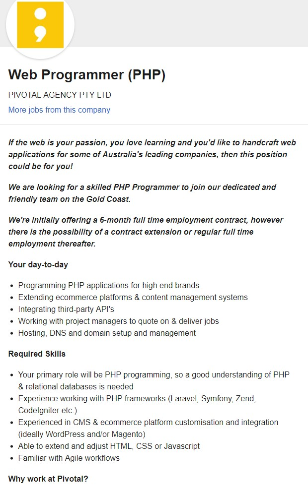
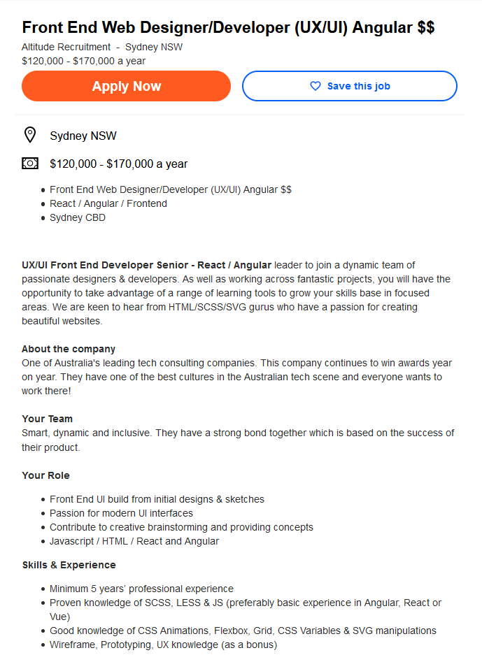
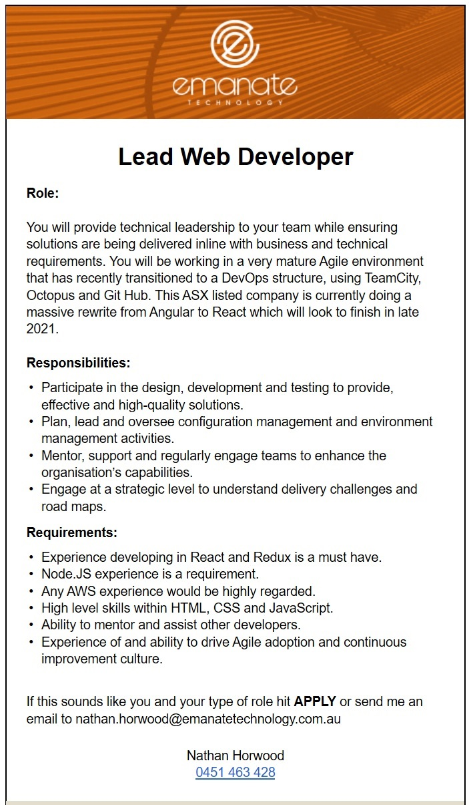
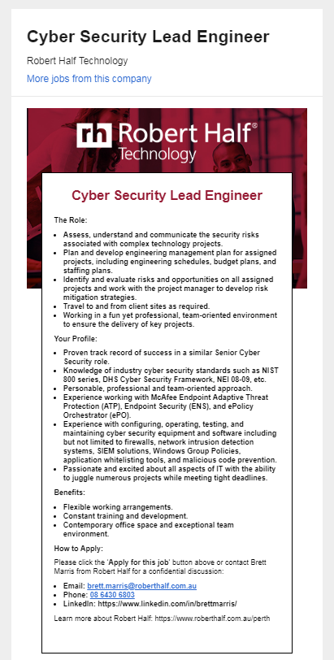
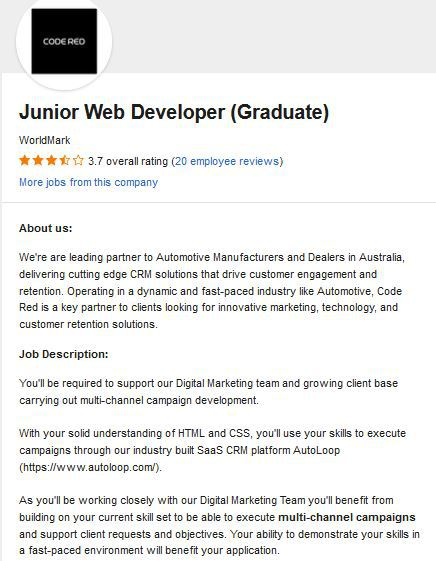
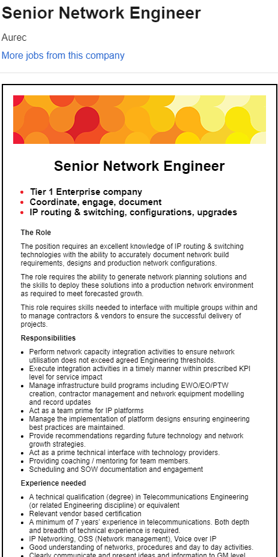

Ideal Jobs
TPGID’s Team ideal jobs vary across the IT industry, the team ideal jobs range from an IT graduate, Web Programming, Senior UX/UI Web developer, Lead Web Developer and into Cyber Security. The IT industry role is a more customer and systems support role with an understanding of Cyber security, The Web Programming and Developer Roles have very similar skill sets such as JavaScript, CSS, HTML, React and Angular while still they can be differentiated by PHP, Node.JS and UX/UI. The Cyber Security Ideal jobs requires Knowledge of Cyber security standards, Frameworks, McAfee Endpoint Adaptive Threat Protection, Endpoint security and also experience in configuration, operating, testing and maintaining Cyber security equipment such as firewalls, network intrusion detection systems, SIEM solutions and Windows Group Policy.
Lawrence Redfern
My ideal Job was a web programmer. A web programmer will use their knowledge of programming to create a product for the end user that is easy to operate and does its main role perfectly. The job would consist of creating a website and then rigorously testing it until you are certain there are no bugs. A web programmer would have skills in JavaScript, CSS and HTML and would have the knowledge of sites such as Font Awesome (for logos and other easy to setup symbols).
Liam Chan-Wicht
My ideal job posting is for a Senior UX/UI (User Interface) Front End Web Developer/Designer. A Front End Web Dev/Designer combines code and design principles to create beautiful and effective websites. These websites are the first points of contact for customers and greatly influence first impressions. Front End Devs/Designers utilise HTML/CSS and Javascript libraries such as React or Angular to create UX/UI for the client.
David Pipczak
My Ideal Job Was a lead web developer. As a lead web developer will provide technical leadership to a team, would also be involved in the planning, design, development and testing of website design. As lead web developer you would have skills in HTML, CSS, Node.JS, JavaScript including libraries such as React and Redux as well as DevOps experience with TeamCity, Octopus and Git Hub.
Johnno Tassoni
My ideal job would either be a software engineer or a cyber security engineer. A software engineer will require someone with a knowledge of multiple programming languages, to develop and update systems and applications that are used in many different industries, from gaming to finance. A cyber security engineer is a job that requires someone to work in a team which helps to protect computer systems against hackers and intruders. Their role is to develop systems, update systems, and analyse system flaws. I find it an exciting role as it will require vast problem-solving knowledge to defend against a dynamically changing threat.
Josh girard
My ideal job in the I.T industry would be a web developer. A web developer is responsible for designing, coding and creating websites to meet a clients needs. A web developer can use their creativity and programming knowledge to create a website that is user friendly and aesthetically pleasing. To be a successful web programmer i will need to be knowledgeable in various programming languages such as HTML, CSS, JavaScript, JQuery and API's.
Mitch Lee
My Ideal job that I would like to attain in the future is the Role of Network Engineer. As a network engineer I would have responsibility for setting up, developing and maintaining computer networks within an organisation or between organisations. I would be offering support to users, who can be staff, clients, customers and suppliers, and troubleshoot any problems that arise. I may also in some cases, also be involved in designing and installing new networks. The role I would be assuming would involve extensive knowledge of the network layout & construction. Ideally i'd like to work as part of an organisation to manage and build their networking systems, conducting remote support where necessary & carrying out all necessary firmware and security updates for all associated systems.
